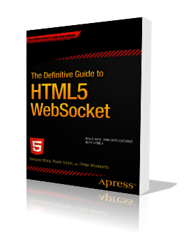

<section id="after-intro" class="page-wrapper light-bg">
  <div class="container">
    <div class="row page-content article">
      <h2>The Definitive Guide to HTML5 WebSocket</h2>
      <h3>Build Real-Time Applications with HTML5</h3>
      <i>By Vanessa Wang, Frank Salim, and Peter Moskovits</i>
      
      <p>
        This book provides an introduction to WebSocket, then describes the WebSocket API and Protocol and provides hands-on examples. We deep dive into three use cases for WebSocket, all using higher-level standard protocols (text and binary) over WebSocket. We walk through building a grown-up version of a chat application using XMPP/WS, a rock-paper-scissors game using pub-sub and STOMP/WS, and desktop sharing using RFB/WS (VNC). Finally, we examine security and deployment considerations.
      </p>
      <p>
        Watch two of the authors, Vanessa and Peter, give a 90 second overview of the book:
      </p>
        <iframe src="https://player.vimeo.com/video/59710576" width="800" height="449" frameborder="0" webkitallowfullscreen mozallowfullscreen allowfullscreen></iframe> <p><a href="https://vimeo.com/59710576">The Definitive Guide to HTML5 WebSocket</a> from <a href="https://vimeo.com/kaazing">peter.moskovits@kaazing.com</a> on <a href="https://vimeo.com">Vimeo</a>.</p>
      <h3>Table of Contents</h3>
        <ol>
          <li>
            Introduction to HTML5 WebSocket
          </li>
          <li>
            The WebSocket API
          </li>
          <li>
            The WebSocket Protocol
          </li>
          <li>
            Building Instant Messaging and Chat over WebSocket with XMPP
          </li>
          <li>
            Using Messaging Over WebSocket with STOMP
          </li>
          <li>
            VNC with the Remote Framebuffer Protocol
          </li>
          <li>
            WebSocket Security
          </li>
          <li>
            Deployment Considerations
          </li>
          Appendix A: Inspecting WebSocket Traffic
          <br/>
          Appendix B: WebSocket Resources
          <br/><br/>
          <h3>Source Code and Preconfigured VM</h3>
          <p>
          The book comes with the source code you need to get the demos up and running, as well as an easy-to-use VM with screencasts that show you what you’ll build. Check out the following screencasts for a quick view into the VM environment and what the hands-on that the chapters cover. You can also dive right into the code yourself:
        </p>
        <ol>
          <li>
            <a href="https://github.com/vjwang/WebSocketBook">View the Source Code on Github</a>
          </li>
          <li>
            <a href="http://kaazingcorp.cachefly.net/com/WebSocketBookVM/WebSocketBook.ova">Download the VM</a>
          </li>
        </ol>
        <figure>
          <figcaption>Chapter 2 — The WebSocket API</figcaption>
          <iframe width="800" height="450" src="https://www.youtube.com/embed/KzDo5gRlg9Q?list=UUTQEXUpZWvd2ZFji48q-2yw" frameborder="0" allowfullscreen></iframe>
        </figure>
        <figure>
          <figcaption>Chapter 3 — The WebSocket Protocol</figcaption>
          <iframe width="800" height="450" src="https://www.youtube.com/embed/lvs5ma8O4mI?list=UUTQEXUpZWvd2ZFji48q-2yw" frameborder="0" allowfullscreen></iframe>
        </figure>
        <figure>
          <figcaption>Chapter 4 — Building Instant Messaging and Chat over WebSocket with XMPP</figcaption>
          <iframe width="800" height="450" src="https://www.youtube.com/embed/4oa9xEn3nos?list=UUTQEXUpZWvd2ZFji48q-2yw" frameborder="0" allowfullscreen></iframe>
        </figure>
        <figure>
          <figcaption>Chapter 5 — Using Messaging Over WebSocket with STOMP</figcaption>
          <iframe width="800" height="450" src="https://www.youtube.com/embed/ckH3ezI4lr8?list=UUTQEXUpZWvd2ZFji48q-2yw" frameborder="0" allowfullscreen></iframe>
        </figure>
        <figure>
          <figcaption>Chapter 6 — VNC with the Remote Framebuffer Protocol</figcaption>
          <iframe width="800" height="450" src="https://www.youtube.com/embed/KPuUlwZKaLY?list=UUTQEXUpZWvd2ZFji48q-2yw" frameborder="0" allowfullscreen></iframe>
        </figure>
        <p>
        Published by <a href="http://www.apress.com/9781430247401">Apress</a> and available on <a href="">Amazon</a>, this is the first printed book (also available as an ebook, for the <a href="http://www.amazon.com/Definitive-Guide-WebSocket-Apress-ebook/dp/B00ACC6AZA/ref=kinw_dp_ke">Kindle</a>, as a <a href="http://www.barnesandnoble.com/w/the-definitive-guide-to-html5-websocket-vanessa-wang/1112122581">Nook</a> book, and other formats) fully dedicated to the WebSocket technology. After reading this book, we hope you’ll be as excited and inspired to use WebSocket as we are.
      </p>
    </div>
  </div>
</section>
